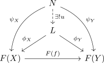

limit (category theory)
Definition
Let $\mathcal{C}$ be a category and $F: \mathcal{J} \rightarrow \mathcal{C}$ a diagram. A limit of $F$ is a cone $(L, \phi)$ such that for every other cone $(N, \psi)$ there exists an unique morphism $u: L \rightarrow N$ such that following diagram commutes:
